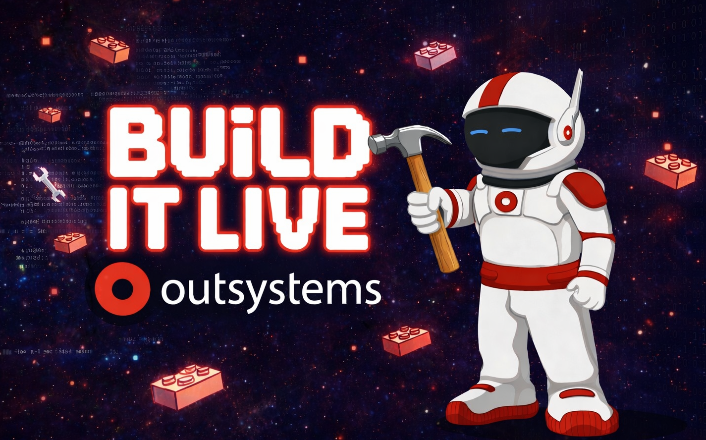

“In a world of so many technical products, it is refreshing to get a technical team first instead of being routed into a generic sales flow.”
Technical-first guidance
Talk to a Technical Expert Before You Talk to Sales
Meet directly with technical experts to discuss a demo, explore a first use case, schedule an AI blueprint session, get started on the platform, and work through real implementation questions before entering a formal sales process.
No-pressure technical guidance for developers, architects, and evaluation teams deciding what to build and how to get started.
What teams want to hear early
Why teams prefer talking to technical experts first
“The most useful part was getting straight answers on architecture, integrations, and where to start without a lot of unnecessary back-and-forth.”
“It felt more like a working session than a sales conversation. We left with a clearer first build and the right next technical step.”
Conversations led by people who can speak to delivery, architecture, and fit.
Designed to help teams assess feasibility, starting points, and implementation paths.
Leave with a concrete idea of what to try, build, or schedule next.
What we help with
Choose the kind of technical support you need.
Every path is designed to help teams move from evaluation to an informed technical starting point without unnecessary back-and-forth.
Book a Technical Meeting
Meet directly with a technical expert to discuss your goals, architecture, questions, or evaluation path.
See a Demo
Walk through relevant product capabilities and discuss how they apply to your use case.
Schedule an AI Blueprint Session
Collaborate on how AI agents, workflows, and orchestration could fit into your business process.
Get Started on the Platform
Find the best path to start learning, building, and evaluating with the right technical resources.
Build Your First Use Case
Book time with us to talk through or co-shape a realistic first application or automation idea.
Why start here
Why talk to the technical team first
This page is intentionally different from a generic contact-sales form. It is for technical evaluators who want clarity before entering a formal buying process.
Technical-first guidance
Talk to people who understand implementation, architecture, and how to get from idea to working solution.
Faster path to value
Get pointed to the right demo, blueprint session, build path, or technical resources without unnecessary back-and-forth.
Clear next steps
Leave with a better idea of what to build, how to start, and which next action makes the most sense.
Trust and credibility
A technical engagement model built for real-world evaluation.
Customer stories
Proof points can be added here later with approved references and real examples.
Technical documentation
Point teams toward primary references they can use during hands-on evaluation.
Live expert sessions
Promote office hours, technical Q&A, or guided evaluation programs as they launch.
Developer resources
Useful starting points for technical teams.
These resources are here to help teams self-serve where possible and come to sessions with sharper questions.
Platform getting started guide
Recommended first steps, setup guidance, and evaluation tips for new teams.
Open guideDevelopment best practices
Patterns for maintainability, delivery speed, architecture choices, and governance.
Read best practicesDocumentation
Reference materials for setup, platform capabilities, APIs, integrations, and more.
Browse docsLearning and training resources
Structured learning paths for builders, architects, and technical evaluators.
Explore learningSample apps and GitHub repos
Starter examples, reference implementations, reusable technical patterns, and the Build It Live archive.
See samples and archiveAI and agentic use-case examples
Practical examples for workflows, copilots, assistants, and orchestration ideas.
View examplesMore technical content
Space for walkthroughs, live builds, and future hands-on content.
The new Build It Live archive creates a home for technical videos now, while leaving room to expand into more demos, hands-on walkthroughs, and guided enablement content.
Quick technical walkthroughs
Short product and architecture videos for evaluators who want a technical overview.
Build-it-live sessions
Recorded or upcoming sessions where a real use case is assembled in public and archived later.
AI blueprint examples
Examples showing how teams can approach workflows, agent design, and orchestration.
Demos and how-to content
Expandable area for tutorials, demo clips, and practical implementation guides.

New webinar and build series
Build It Live: practical sessions teams can watch, revisit, and build from.
We are adding a dedicated archive for recorded build sessions, technical walkthroughs, and real use-case examples. Each session can link to a companion GitHub repo, making it easier for teams to move from watching to trying the build themselves.
The archive page also includes an idea submission form so users can suggest future workflows, applications, and AI-enabled builds they want the team to tackle next.
Archived sessions
Keyword search
Topic filters
Repo links
Build your first use case
Work through a practical first build with people who can help shape it.
Some teams do not need a polished sales demo first. They need help identifying a smart starter use case, evaluating feasibility, talking through integrations, and deciding what a realistic first implementation should include.
This session is designed to reduce friction to first success and give your team a clear starting point.
Book a First Use-Case SessionWhat we can work through together
- Identify a strong starter workflow or application idea
- Pressure-test feasibility, scope, and dependencies
- Discuss integrations, data boundaries, and operational fit
- Shape a realistic first build plan your team can act on
Booking options
Pick the session that matches where your team is right now.
Still technical-first: these sessions are meant to help you evaluate, plan, and get moving before a formal sales cycle.
30-minute technical intro call
A fast way to align on goals, constraints, architecture questions, and the best next technical step.
Ideal for: Developers, architects, and teams starting evaluation.
Book this sessionDemo discussion
Review relevant capabilities and talk through how the platform maps to your use case.
Ideal for: Teams that want a guided walkthrough tied to their needs.
Request demo discussionRecommended for AI planning
AI blueprint session
Work through agentic workflows, orchestration patterns, feasibility questions, and a realistic AI-first starting point.
Ideal for: Technical leaders exploring AI-enabled business workflows.
Schedule blueprint sessionFirst use-case working session
Bring a practical workflow or app idea and shape it into a sensible first build.
Ideal for: Teams ready to move from curiosity to a defined first project.
Plan first use caseBook time
Start with a technical conversation
Whether you want a demo, a blueprint, technical guidance, or help shaping a first use case, our team can help.
Replace the placeholder form action or connect this form to your scheduling workflow later.
Ready to talk through what to build?
Start with a technical conversation
Whether you want a demo, a blueprint, technical guidance, or help shaping a first use case, our team can help.